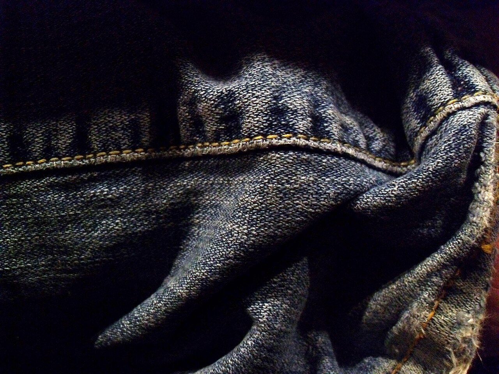
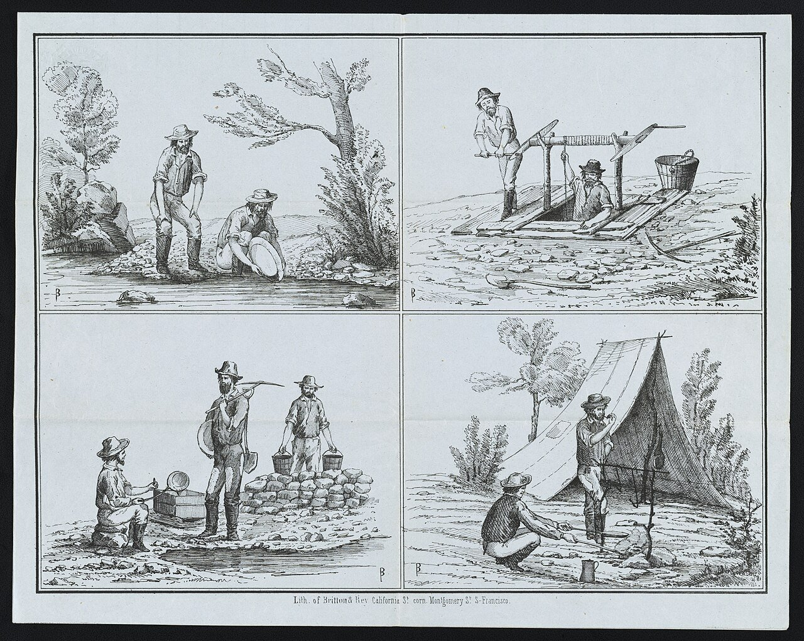
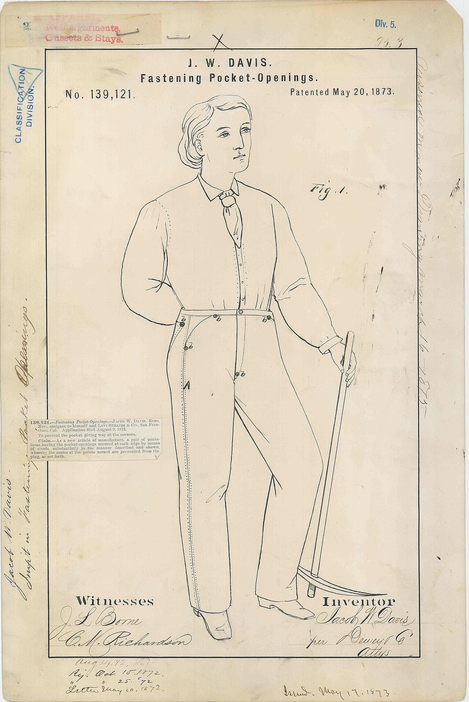
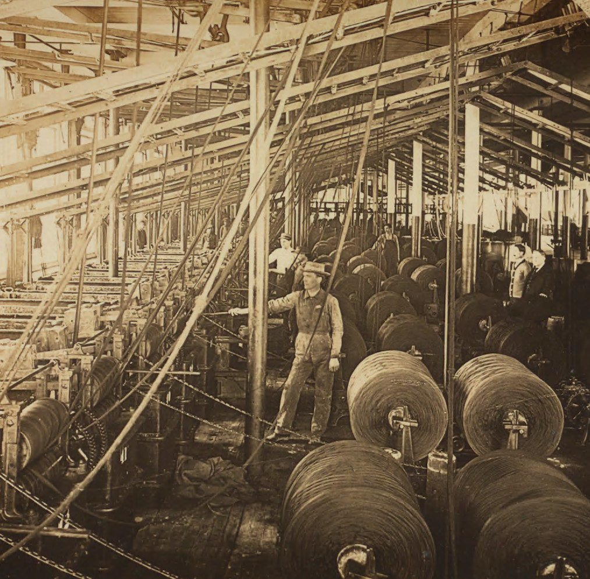
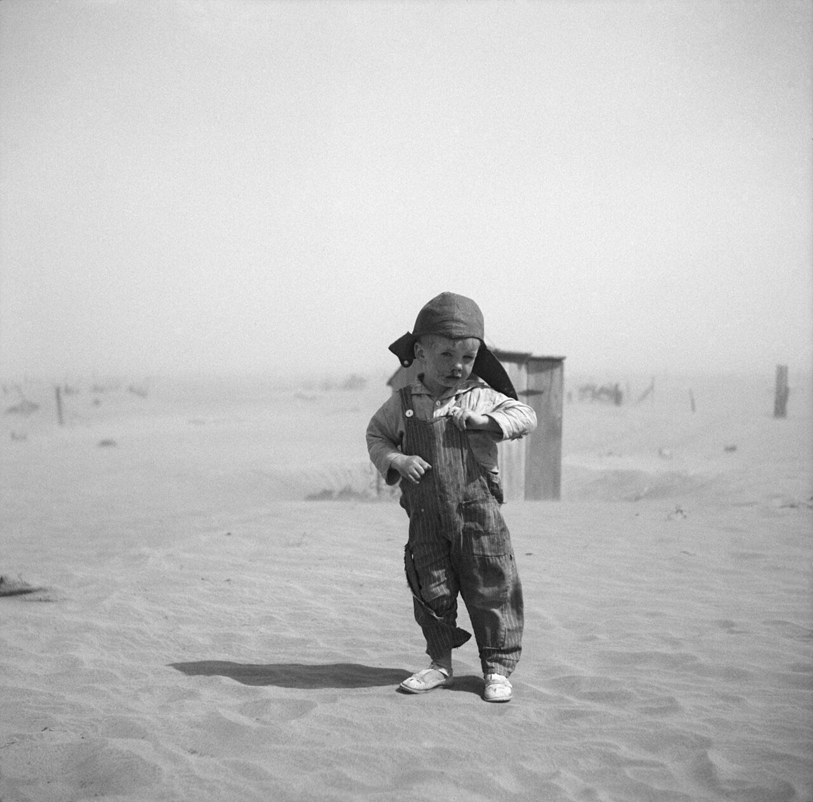
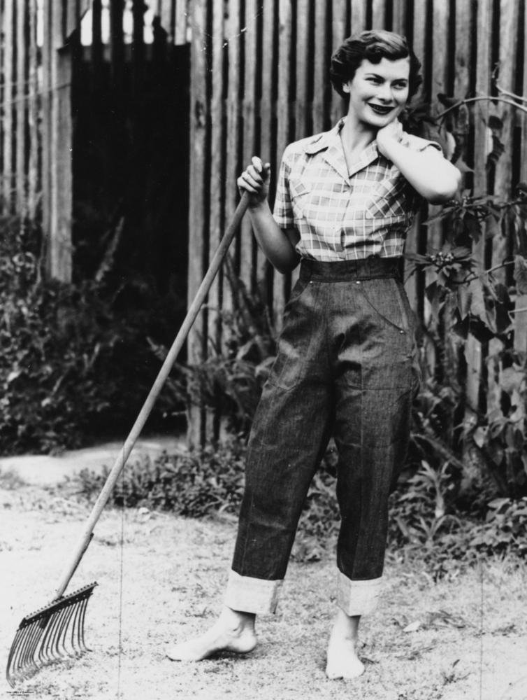
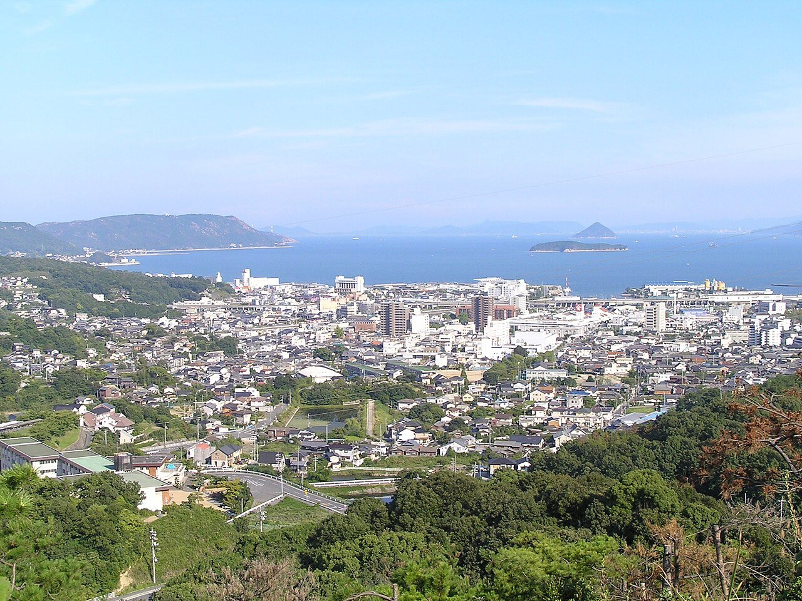
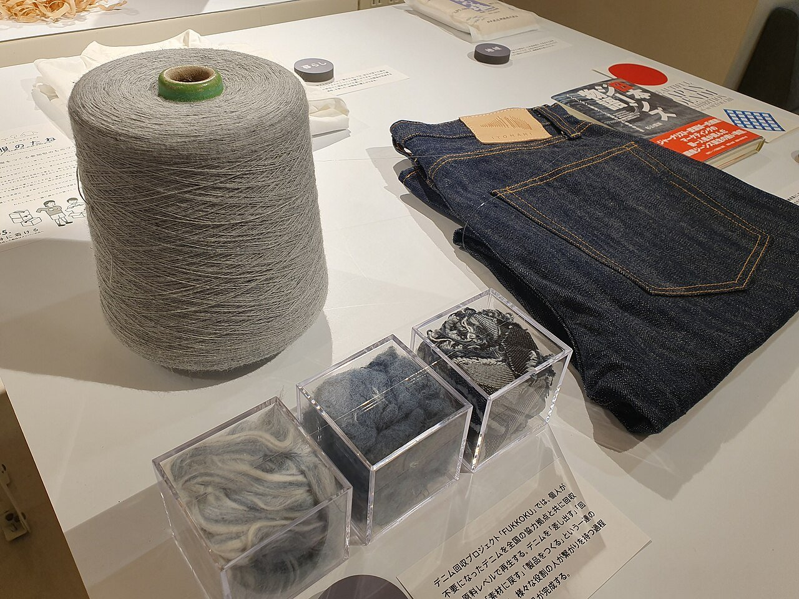

文化・暮らし Culture & Lifeジーンズは、なぜ世界中ではかれるようになった？
鉱山や鉄道で働く人の作業ズボンが、いまでは国も年齢も問わない普段着です。金属の鋲（びょう）の特許、藍で染めた布のしくみ、作業着から若者の服への年表で、その150年をたどります。あなたの手元の1本には、どんな旅の跡が残っているでしょうか。
2026.10.23 UP 約5分で読める 文：SOMOSOMO編集部
写真：Deb Tremper（パブリックドメイン）
アメリカ、1873年5月20日。ネバダ州リノの仕立て屋ジェイコブ・デイビスの発明に、特許が認められました。番号は139,121。作業ズボンのポケットの口の両端を、金属の鋲で留める工夫です。権利は、サンフランシスコの布問屋リーバイ・ストラウスの会社（のちのリーバイス）にも譲られていました。
それから150年あまり。この作業ズボンの子孫は、東京の駅でも、パリの街角でも、ソウルの大学でも見かけます。年齢も仕事も問わずにはかれる服は、ほかにあまりありません。働く人のためのズボンが、どうして世界中の普段着になったのでしょうか。
In a word
働く人のための破れにくい作業着 として生まれ、映画で若者の服 になり、やがて国ごとに作られて身近に手に入る 普段着になったからです。
01
Copper Rivets
破れないズボンは、小さな鋲から生まれた
1848年、カリフォルニアで金が見つかると、一攫千金（いっかくせんきん）を夢見る人が世界中から集まりました。「ゴールドラッシュ」です。鉱山で掘る人、鉄道を敷く人、牛を追う人。アメリカ西部の荒っぽい仕事では、服はすぐにすり切れ、破れました。

金を掘る人たちの毎日 1850年ごろ、サンフランシスコで刷られた版画。砂金をすくい、穴を掘り、重いおけを運ぶ。ひざをつき、しゃがみこむ仕事ばかりで、ズボンはすぐに傷みました。写真：Miners panning for gold… ／Britton & Rey（1850年ごろ、パブリックドメイン）
リノで店を開いていたデイビスは、テントや馬の毛布など、丈夫な布の品を作っていました。1870年の暮れ、ある女性客が「木こりの夫のために、丈夫な作業ズボンを」と頼みます。デイビスは、縫い目だけでは弱いポケットの角に、毛布の補強に使っていた銅の鋲を打ちこみました。
このズボンは働く人たちの間で評判になり、注文に追いつけないほどになります。1872年、デイビスは布の仕入れ先だったストラウスに、特許をとるための後ろだてを頼む手紙を書きました。特許が認められると、ストラウスの会社はデイビスを迎え、このズボンを作って売りはじめます。

特許第139,121号の図面 1873年の特許に添えられた図。絵の人がはいているのは、ゆったりした作業ズボンです。特許では、ポケットの口など力のかかる所を鋲で留める工夫が説明されています。写真：Patent Drawing for J. W. Davis' Fastening Pocket Openings ／作者不明（アメリカ国立公文書館所蔵、1873年、パブリックドメイン）
初めのころは茶色の厚い綿布も使われましたが、やがて青いデニムが中心になります。ただし当時は「ジーンズ」とは呼ばれず、「ウエスト・オーバーオール（腰までの作業着）」という名前でした。この会社は、1960年までこの呼び名を使っていました。
02
Indigo & Twill
表は青く、裏は白い。デニムは糸の半分だけを染める
デニムの青は、藍（あい）、英語でインディゴと呼ばれる染料の色です。昔はインドなどで育てた植物から作られていましたが、1878年にドイツで合成に成功し、1897年からは工場で作られるようになりました。いまはほとんどが合成の藍です。
デニムは、たて糸だけを藍で染め、よこ糸は白いまま織ります。しかも、たて糸がよこ糸を何本かまたいで表に出る「綾織り（あやおり）」という織り方です。そのため表は青く、裏は白っぽくなり、表には斜めの線が浮かびます。
Fig.01 デニムの表と裏を拡大すると
表（おもて） 裏（うら）
たて糸：藍で染める よこ糸：白いまま 図では、藍色を黒で表しています
見どころは、表と裏で黒と白の割合が逆になっていること。表は藍のたて糸が4マスに3マス出て、斜めの線をつくります。裏は白いよこ糸が多く出ます。綾織りのしくみを簡単にした図です。
もう1つの特徴は、藍が糸の芯までしみこまず、主に外側に色がつくことです。だから、はくほどにこすれた所から色が落ち、白っぽい芯がのぞきます。ひざやポケットのまわりの色落ちは、はく人の動きの記録でもあります。
アメリカでは19世紀の終わりから、デニムを大量に織る工場が南部に増えていきました。たくさん織られる丈夫な布が、作業着を支えます。

デニム工場の染め場 1909年ごろ、ノースカロライナ州のホワイト・オーク工場の染め場。手前の大きな筒には、たくさんの糸が巻かれています。デニムのたて糸は、布に織る前の、糸の段階で染めます。写真：Dyehouse, White Oak Cotton Mills ／H.C. White Co.（1909年、パブリックドメイン。立体写真の左半分を切り出し）
03
From Work to Youth
作業着は、映画のスクリーンで「若者の服」になった
20世紀の前半まで、デニムの服は農場や工場、鉄道で働く人のものでした。胸当てのついたオーバーオールも、同じデニムで作られています。丈夫で安く、汚れても目立たない。働く人にとって、ちょうどよい服でした。


働く服から、ふだんの服へ 左は1936年、砂嵐の続いた時代（ダストボウル）のアメリカ・オクラホマ州で、作業着のオーバーオールを着た農家の男の子。右は1952年、オーストラリアの百貨店の広告のために撮られた、裾を折り返したジーンズ姿です。写真：Son of farmer in dust bowl area ／Arthur Rothstein（1936年、パブリックドメイン）、Young woman modelling a pair of denim jeans ／Harry Poulsen（1952年、パブリックドメイン）
第二次世界大戦（1939〜1945年）のころから、ジーンズをはく人はさらに増えていきます。そして大きな転機になったのが、1950年代のアメリカ映画でした。
1953年の『乱暴者（あばれもの）』ではマーロン・ブランドが革ジャンにジーンズで、1955年の『理由なき反抗』ではジェームズ・ディーンが赤いジャケットにジーンズで、大人に逆らう若者を演じます。アメリカではジーンズが反抗のしるしと見られ、はいて登校するのを禁じる学校も多くありました。
ジーンズは、アメリカの外の若者もひきつけます。1957年、ソ連のモスクワで「世界青年学生祭典」が開かれ、130か国から約3万4,000人が集まりました。外国人と自由に会えなかったソ連の人々にとって、西側の若者の服を間近に見る機会になり、ソ連にも「ジーンズ熱」が起きます。
1960年代の終わりまでには、ジーンズはヨーロッパなど世界各地で若者のおしゃれになりました。当時の若者の運動でも好んで着られ、自由や個性を表す服と見られるようになります。そして1970年代には、反抗のしるしではなく、年齢を問わない普段着になっていきました。
作り手の工夫も後押ししました。洗っても縮みにくい「防縮加工」は、ほかの会社が先に取り入れ、1962年には最大手のリーバイスも防縮加工のジーンズを出しました。1980年代には、石と一緒に洗って使いこんだ風合いを出す「ストーンウォッシュ」が広まり、より多くの人の好みに合うジーンズが生まれました。
Fig.02 ジーンズは、誰の服だった？
1900 1950 2000
1873– 働く人の作業着 鉱山・農場・鉄道で。呼び名は「ウエスト・オーバーオール」 1953– 反抗する若者の服 映画をきっかけに、若者のしるしになった 1970s– 世界の普段着 国や年齢を問わず、ふだんにはく服に
見どころは、いちばん左の灰色の帯の長さ。ジーンズは生まれてから80年ほど、ほとんど作業着でした。帯の長さは年数に比例しています。区切りの年は目安で、実際には時代が重なっています。
04
Made in Kojima
足袋と学生服の町が、日本のジーンズを縫った
日本にジーンズが広まったのは戦後です。アメリカ軍が手放した古着の中に大量のジーンズがあり、東京・上野のアメ横などで売られました。1950年ごろの東京には、古着を売る店が7,000軒以上あったといわれます。
国産のジーンズの始まりには諸説ありますが、岡山県の児島（こじま、いまの倉敷市）が最初とする説がよく知られています。児島は江戸時代から織物が盛んな町で、大正時代には足袋（たび）の生産で全国一になりました。

ジーンズの町、児島 鷲羽山（わしゅうざん）から見た倉敷市児島の町並み。瀬戸内海に面したこの町に、いまも縫製や加工の会社が集まっています。2008年の撮影です。写真：Kurashiki City Kojima town seen from Washuzan skyline ／Tatushin（2008年、パブリックドメイン）
洋服の時代になると、児島は学生服に切りかえ、1960年ごろには全国の約7割を作っていたとされます。厚い綿の布を、丈夫に縫う。足袋と学生服で磨いた技術は、ジーンズにも生かせました。
1965年、児島の縫製会社がアメリカから輸入したデニムで国産のジーンズを作りはじめ、1970年代には布そのものも日本で織られるようになります。国内で作られると、ジーンズは身近な店で手ごろに買える服になりました。1973年には、日本で1年に約4,500万本が売れたともいわれます。
アメリカから来た作業着は、それぞれの国で作られ、どこでも手に入る服になったことで、暮らしに根づいていったのです。
05
By the Numbers
1本の一生に、お風呂およそ19杯分の水
世界中でこれだけはかれるようになると、作るときの影響も大きくなります。大手メーカーのリーバイ・ストラウス社が自社の1本について出した推計（2015年発表）では、綿を育ててから捨てられるまでに使う水は約3,781リットル。家庭のお風呂（約200リットルとして）のおよそ19杯分です。
いちばん多いのは綿を育てる段階で、全体の約7割。数字のうえでは、買ったあとの家での洗濯も無視できない大きさです。
Fig.03 ジーンズ1本の一生で使う水
綿を育てる 約2,565L
家での洗濯 約860L
布を織る・染める 約236L
ボタン・包装 約77L
縫う・仕上げ 約34L
見どころは、赤い「家での洗濯」の棒。工場で布を織り、縫う段階よりずっと長く、全体の2割あまりです。リーバイ・ストラウス社が2012年に作った自社の1本について、アメリカ・イギリス・フランス・中国の4か国の消費者の調査を含めて出した推計です（2015年発表）。

古いジーンズを、もう一度糸に 東京・渋谷の商業施設での展示（2022年）。着古したジーンズをほぐして作った再生の糸が、ジーンズと並べて紹介されていました。写真：Recycled thread made from old jeans, on display in Hikarie ／Syced（2022年、CC0）
約 33.4kg ジーンズ1本の一生で出る温室効果ガス（二酸化炭素に換算）リーバイ・ストラウス社が自社の1本について出した、1本の一生を通した調べ（2015年発表）
約 83億m³ 日本に供給される服を作るのに、1年に必要な水環境省「サステナブルファッション」（2026年10月確認）
約 11着 日本で1人が1年に手放す服環境省「サステナブルファッション」（同上）
Here's the Fun Part
ここが面白い！
「ジーンズ」は、イタリアの港町ジェノヴァのフランス語名「ジェーヌ（Gênes）」から来たという説が有力です。ジェノヴァでは16世紀ごろ、船乗りや働く人のための丈夫な綿の布が作られ、「ジーン」と呼ばれていました。
「デニム」のほうは、フランスの町ニームの「セルジュ・ドゥ・ニーム（ニームの綾織り）」が縮まった言葉とされます。ところがデイビスたちが使ったデニムはアメリカで織られたもので、「ニームから運ばれた」というのは後からできた言い伝えです。
特許に名を連ねた2人も、アメリカ生まれではありません。デイビスは当時ロシア帝国の一部だった、いまのラトビアの首都リガの生まれ。ストラウスは、ドイツのバイエルン地方の村の生まれです。
イタリアとフランスの町の名を持つ布を、2人の移民が作業着に仕立てた。アメリカを代表する服は、生まれたときから「世界の服」だったのです。
次にジーンズをはくときは、ポケットの角の小さな鋲と、裾を折り返した裏側の、白っぽい布の色を見てみてください。手元の1本にも、150年分の旅の跡が残っています。
出典・参考
US139121A: Improvement in fastening pocket-openings （Google Patents）：1873年5月20日の特許第139,121号。発明者ジェイコブ・W・デイビス、権利の一部をリーバイ・ストラウスの会社に譲渡。ポケットの口を金属の鋲で留める工夫Jeans （英語版 Wikipedia）：1872年のデイビスの手紙と1873年の特許、茶色の綿布とデニム、ニーム説の言い伝え、鉱山・農場・牧場の作業着、ジェノヴァとニームの布、1960年までの「waist overalls」の呼び名、第二次世界大戦のころの広がり、『乱暴者』『理由なき反抗』、1960〜70年代の広がり、1962年の防縮加工、1980年代のストーンウォッシュ、ソ連の「ジーンズ熱」Jacob W. Davis （英語版 Wikipedia）：リガ生まれ、リノの仕立て屋、テントや馬の毛布と銅の鋲、1870年12月の木こりのズボンの注文、1872年のストラウスへの依頼、サンフランシスコの工場の監督Levi Strauss （英語版 Wikipedia）：バイエルン王国ブッテンハイム生まれ、ゴールドラッシュのころのサンフランシスコの布問屋Denim （英語版 Wikipedia）：たて糸だけを染める綾織り、裏が白い理由、「serge de Nîmes」の語源、藍が糸の外側に色づく「リング染め」と色落ち、1960年代の若者の運動と世界への広がり、1970年代の普段着化Indigo dye （英語版 Wikipedia）：1878年のバイヤーによる合成、1897年からの工業生産California gold rush （英語版 Wikipedia）：1848年の金の発見Cone Mills Corporation （英語版 Wikipedia）：1895年からのノースカロライナ州のデニム工場、1905年のホワイト・オーク工場Perfecto motorcycle jacket ／Rebel Without a Cause （英語版 Wikipedia）：『乱暴者』のブランドの革ジャン、『理由なき反抗』のディーンの赤いジャケット6th World Festival of Youth and Students （英語版 Wikipedia）：1957年のモスクワの祭典、130か国から3万4,000人、外国人との交流の制限ジーンズ （日本語版 Wikipedia）：「デニム」「ジーンズ」の語源、映画の衣装、戦後のアメ横の古着と1950年ごろの東京の古着店7,000軒以上、アメリカの学校での禁止、1971年の1,500万本と1973年の4,500万本、1970年代の国産デニム児島市 （日本語版 Wikipedia）：江戸時代からの織物、大正時代の足袋の生産全国一、1960年ごろの学生服の全国シェア約70％、1965年のジーンズの生産開始ビッグジョン （日本語版 Wikipedia）：1965年の国産ジーンズの生産開始、1973年の国産デニムの開発The Life Cycle of a Jean （リーバイ・ストラウス社、2015年）：同社が2012年に作った501の一生で使う水3,781リットルと段階ごとの内訳（綿2,565・布236・縫製34・副資材と包装77・洗濯860リットル）、温室効果ガス33.4kg（二酸化炭素換算）、消費者の調査の対象4か国サステナブルファッション （環境省）：国内に供給される衣服の製造に必要な水 年間約83億m³、1人が1年に手放す服 約11着（2020年度からの調査）写真：Denim jeans wrinkled ／Deb Tremper（撮影年不明、パブリックドメイン）。本文中の写真のクレジットは、それぞれの写真の下に記しています（いずれも CC0 またはパブリックドメイン）